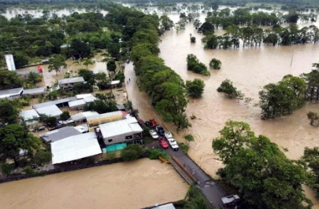
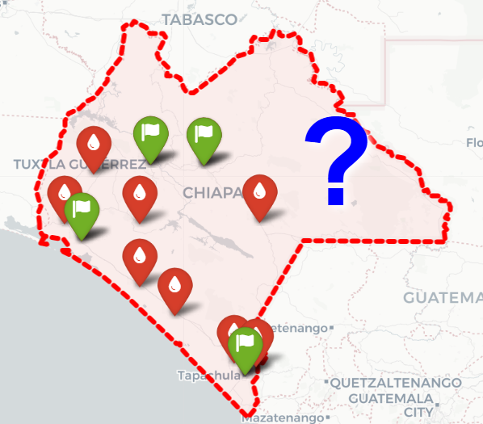
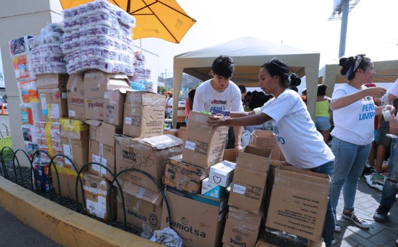
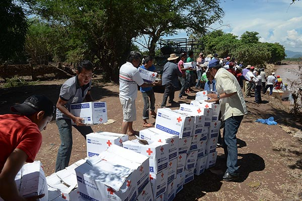
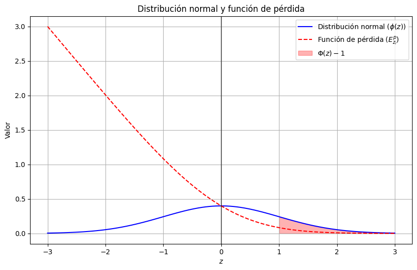
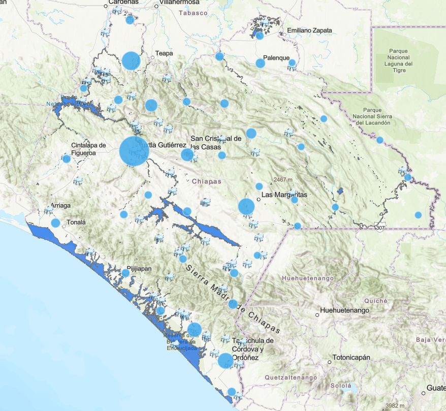
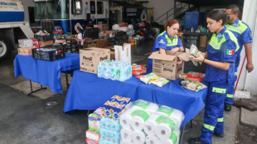
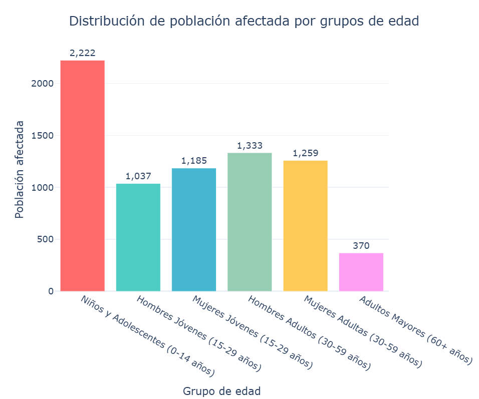
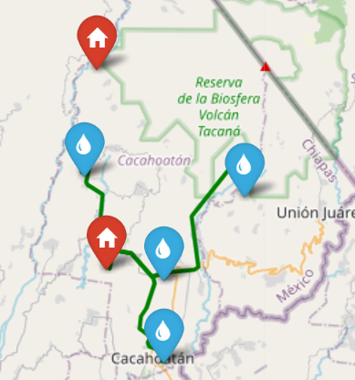
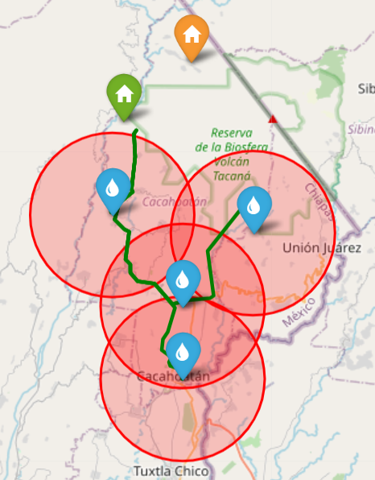

Modelo de Optimización para Localización de Almacenes Preposicionados e Inventario Humanitario
Contenido
- Introducción
- Marco Teórico: Problema de Localización
- Modelo de Inventarios EOQ Estocástico
- Función Objetivo Integrada
- Métricas de Desempeño
- Aplicación en Chiapas
- Escenarios Evaluados
- Conclusiones
- Referencias
Introducción
La alta recurrencia de inundaciones y deslizamientos en afecta comunidades vulnerables. Este estudio busca optimizar la respuesta humanitaria mediante la planificación previa, la ubicación estratégica de almacenes y la gestión eficiente de recursos.

Objetivos
Modelo integrado de ubicación de almacenes + inventario humanitario para zonas inundables en el sureste de México.

Marco Teórico: Problema de Localización
Conjuntos:
- \(\mathcal{I}\): Almacenes candidatos
- \(\mathcal{J}\): Localidades demandantes
- \(\mathcal{P}\): Productos humanitarios
Variables:
- \(x_i \in \{0,1\}\): ¿Abrir almacén en \(i\)?
- \(y_{ij} \geq 0\): Flujo \(i \to j\)
Parámetros clave:
- \(w_i\): Peso posicional (aptitud logística)
- \(c_{ij}\): Costo unitario de transporte
- \(f_i\): Costo fijo de apertura
- \(d_j\): Demanda esperada en \(j\)
Restricciones del Modelo
1. Balance de Inventario: \[\sum_{j} x_{ij} \leq I_i \quad \forall i\]
2. Cobertura de Demanda: \[\sum_{i} x_{ij} + z_j = s_j \quad \forall j\]
3. Activación Condicional (Big-M): \[x_{ij} \leq M \cdot y_i \quad \forall i, j\]
4. Capacidad Máxima: \[I_i \leq C_i \cdot y_i \quad \forall i\]
\(M\) es una constante suficientemente grande.
Modelo de Inventarios EOQ con demanda Estocástica
Cantidad Económica de Pedido: \[Q^* = \sqrt{\frac{2DS}{H}}\]
Componentes:
- \(D\): Demanda anual del producto
- \(S\): Costo de ordenar por pedido
- \(H\): Costo de mantener inventario

Adaptación para Contexto Humanitario
- Demanda estocástica por incertidumbre en afectación
- Horizonte temporal ajustado a emergencias
- Múltiples productos con características diferentes
Inventario de Seguridad y Punto de Reorden
Inventario de Seguridad: \[SS = Z_{\alpha} \cdot \sigma_d \cdot \sqrt{L}\]
Punto de Reorden: \[R = d \cdot L + SS\]

donde:
- \(Z_{\alpha}\): Valor Z para nivel de servicio \(\alpha\) (95%)
- \(\sigma_d\): Desviación estándar de demanda diaria
- \(L\): Tiempo de entrega en días
- \(d\): Demanda diaria promedio
Función de Pérdida Normal
Para estimar el riesgo de escasez, usamos la función de pérdida asociada a la distribución normal:
\[E[Z] = \phi(Z) - Z(1 - \Phi(Z))\]

Aplicación en Fill Rate:
- Fill Rate proporción de demanda satisfecha
- Relación directa con nivel de servicio
- Base para cálculo de costos por escasez
Función Objetivo Integrada
Minimización de Costos Totales:
\[ \min Z = \sum_{i \in I} f_i Y_i + \sum_{i \in I} \sum_{j \in J} w_i c_{ij} Y_{ij} + \sum_{i \in I} \sum_{p \in P} TC_{ip} \]
Componentes:
| Término | Descripción |
|---|---|
| \(\sum f_i Y_i\) | Costo fijo de apertura de almacenes |
| \(\sum w_i c_{ij} Y_{ij}\) | Costo de transporte ponderado por aptitud logística |
| \(\sum TC_{ip}\) | Costo total de inventario por producto |
Balancear inversión en infraestructura, operación logística y nivel de servicio.
Componentes del Costo de Inventario
\[ TC_{ip} = {\color{blue}\frac{C^{op}_i D^p_j}{Q^p_{ij}} + C^{sp}_i \left(\frac{Q^p_{ij}}{2} + SS\right) + C^p_i D^p_j} {\color{red}+ \frac{D^p_j}{Q^p_{ij}} (C^f_i + \sigma_d E[Z] B)} \]
- \({\textcolor{blue}{\textbf{Costo de pedido o preparación}}}\): se reduce al aumentar la cantidad pedida.
- \({\textcolor{blue}{\textbf{Costo del mantenimiento o almacenamiento}}}\): considerando el inventario promedio y la seguridad \(SS\).
- \({\textcolor{blue}{\textbf{Costo de adquisición}}}\): asociado a la demanda esperada \(D^p_j\) del producto \(p\).
- \({\textcolor{red}{\textbf{Costo esperado de faltante}}}\): incorpora la variabilidad de la demanda \(\sigma_d\) y el costo unitario de escasez \(B\).
Peso Posicional (\(w_i\))
Multicriterio para Selección
Componentes del Peso Posicional \(w_i\):
- Accesibilidad por carretera
- Existencia de servicios básicos
- Infraestructura disponible
- Población
Objetivo:
Priorizar localidades con mayor capacidad logística y menor vulnerabilidad estructural
Métricas de Desempeño
Fill Rate del Sistema: \[FR_{sistema} = \frac{\sum_{i \in I} \sum_{p \in P} D_{ip} \cdot FR_{ip}}{\sum_{i \in I} \sum_{p \in P} D_{ip}}\text{,}\]
Costo Total por Persona Atendida: \[Costo_{pe} = \frac{Costo_{t}}{Poblacion_{a}}\text{,}\]
Tiempo Promedio de Respuesta: \[T_{respuesta} = \frac{\sum_{i \in I} \sum_{j \in J} t_{ij} \cdot Y_{ij}}{\sum_{i \in I} \sum_{j \in J} Y_{ij}}\text{,}\]
donde:
- \(t_{ij}\) : tiempo de transporte (horas) desde el almacén \(𝑖\) hasta la zona afectada \(𝑗\).
¿Por qué L-BFGS-B para este problema?
Método de Solución: Algoritmo L-BFGS-B
Fundamentos Cuasi-Newton
Aproximar el Hessiano sin cálculo explícito
\[B_{k+1} s_k = y_k\]
donde \(s_k = x_{k+1} - x_k\), \(y_k = \nabla f(x_{k+1}) - \nabla f(x_k)\)
\[H_{k+1} = (I - \rho_k s_k y_k^\top) H_k (I - \rho_k y_k s_k^\top) + \rho_k s_k s_k^\top\] \[\rho_k = (y_k^\top s_k)^{-1}\]
\(y_k^\top s_k > 0\) (garantizada por Wolfe)
Restricciones Tipo Caja y Proyección Ortogonal
\[\Omega = \{x \in \mathbb{R}^n \mid \ell_i \leq x_i \leq u_i\}\]
\[P_\Omega(z) = \arg\min_{x \in \Omega} \frac{1}{2}\|x - z\|^2\]
\[[P_\Omega(z)]_i = \min\{u_i, \max\{\ell_i, z_i\}\}\]
Proyección simple y eficiente (\(O(n)\))
Condiciones KKT para Problemas con Cotas
El gradiente debe apuntar del dominio factible en las fronteras.
\[\nabla_\Omega f(x^*) := P_\Omega(x^* - \nabla f(x^*)) - x^* = 0\]
El algoritmo se detiene cuando: \[\|\nabla_\Omega f(x_k)\| \leq \varepsilon\]
Teorema de Convergencia Global
Hipótesis (Byrd et al., 1995):
Garantía teórica: El algoritmo no diverge y encuentra puntos estacionarios factibles.
Resultado (Teorema 6.2): \[\liminf_{k \to \infty} \|\nabla_\Omega f(x_k)\| = 0\]
Interpretación: Toda subsucesión convergente satisface las condiciones KKT.
Valida que la solución numérica obtenida es óptima bajo restricciones de caja.
Implementación Computacional: Entorno y Herramientas
Implementación Computacional: Estructura y Parámetros
Aplicación en Chiapas
Características de Chiapas:
- Alta vulnerabilidad a inundaciones y deslizamientos
- Topografía compleja que afecta accesibilidad
- Población dispersa en comunidades rurales
- Recursos limitados para logística humanitaria
Productos Humanitarios Considerados:
- Agua potable (2 litros/persona/día)
- Alimentos no perecederos
- Kits de medicamentos básicos
- Ropa y cobijas
- Artículos de higiene personal


Grupo de edades y productos específicos
Observaciones clave:
- Necesidades varían según edad: niños, adultos y ancianos.
- Mujeres requieren kits de higiene distintos a los hombres.
- La logística debe planificar la distribución según edad y género para optimizar recursos.

Cálculo del Peso Posicional — Caso Chiapas
El peso posicional \(w_j\) integra cinco dimensiones logísticas de relevancia humanitaria, cada una con ponderación del 20 %. Se normalizaron todas las variables en el rango \([0,1]\):
\[w_i = 0.20 (Diconsa_i + AccesoVial_i + Escuelas_i + Servicios_i + Poblacion_i)\]
Top 5 localidades con mayor potencial logístico (Cacahoatán):
| # | Localidad | Peso |
|---|---|---|
| 1 | Salvador Urbina | 1.000 |
| 2 | Faja de Oro | 0.983 |
| 3 | Cacahoatán | 0.849 |
| 4 | Rosario Ixtal | 0.749 |
| 5 | Mixcum | 0.657 |
Escenarios Evaluados — Cacahoatán
Objetivo: Analizar la sensibilidad del modelo ante restricciones espaciales.
🔹 Escenario A: Sin radio de afectación
- Se evaluaron 2 almacenes candidatos.
- El modelo seleccionó 1 almacén óptimo que cubre las 4 localidades.
- Solución eficiente en costo y plena cobertura del territorio.
| Indicador | Resultado |
|---|---|
| Cobertura | 100 % |
| Población atendida | 7,407 personas |
| Localidades cubiertas | 4 |
| Fill rate promedio | 100 % |
| Costo total anual | $195,459,693 MXN |

Continuación Escenarios Evaluados — Cacahoatán
🔹 Escenario B: Con radio de afectación \(r = 5\) km
- El almacén 1 queda dentro del radio de influencia del segundo.
- El modelo selecciona el almacén 2 como óptimo.
- Se mantiene cobertura total, pero con mayor eficiencia espacial.

La restricción geográfica redefine la ubicación óptima, evidenciando la importancia de integrar criterios espaciales en la localización humanitaria.
Análisis de Sensibilidad
Factor de Afectación:
- Escenario base: 30% de población afectada
- Análisis de sensibilidad: 20% - 50%
Nivel de Servicio:
- Objetivo principal: 95% fill rate
- Variación: 90% - 99%
Número de Almacenes:
- Rango evaluado: 1-2 almacenes
- Trade-off: Costo vs. Cobertura
Conclusiones
Hallazgos Principales
Efectividad del Modelo:
- Integración exitosa de localización e inventario
- Balance óptimo entre costos y nivel de servicio
- Aplicabilidad práctica en contextos reales
Contribuciones:
- Un marco decisional para planificación pre-desastre
- Herramienta cuantitativa para agencias humanitarias
- Base metodológica replicable en otros municipios
Recomendaciones para Cacahoatán
- Implementar configuración de un almacén
- Mantener inventarios según cálculo EOQ con demanda Estocástica
- Monitorear continuamente factores de riesgo